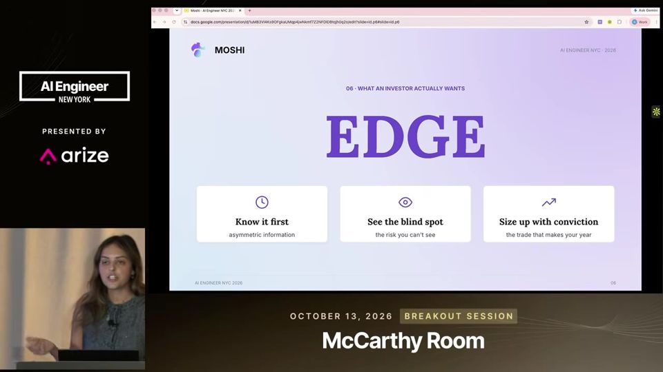
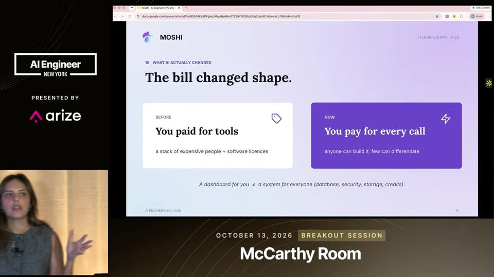
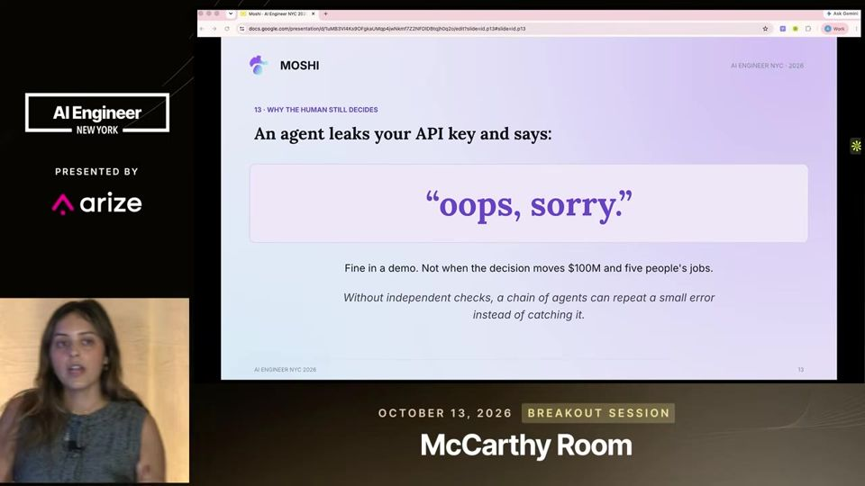
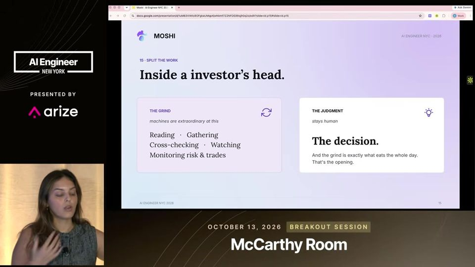
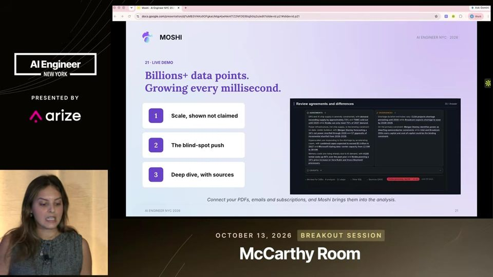

The Investor's Edge Lives in Their Head
Em finanças, a máquina faz o trabalho braçal com dados e o humano mantém a decisão, porque só ele responde pelo erro.
Em 3 frases
Anekha Sokhal, fundadora da Moshi, diz que o diferencial de um investidor (edge) é o contexto que ele carrega na cabeça, e que modelos, prompts e conectores qualquer um consegue copiar.
Ela propõe separar o trabalho braçal (ler, reunir e limpar dados), que vai para agentes, do julgamento final, que fica com o humano, pois um agente não assume responsabilidade por um erro.
A Moshi se vende como um analista quantitativo 24/7 com seis agentes determinísticos, mas o talk traz poucas evidências além de números de marketing.
Antes de ler
Edge é o que não dá para baixar
Edge, a vantagem do investidor, tem três partes: saber antes dos outros, enxergar pontos cegos e ter convicção para apostar mais. Se todos usam os mesmos modelos, prompts e conectores, a vantagem está no conhecimento acumulado na cabeça de quem opera. Quando essa pessoa sai da firma, esse ativo sai junto.

A IA barateou a equipe, mas não a produção
Ferramentas de IA fazem parecer que uma pessoa com algumas chamadas de API substitui uma equipe de quants, cientistas e engenheiros de dados. A palestrante aponta o que some da conta: ao levar um painel de fim de semana para outra pessoa, surgem segurança, banco de dados, armazenamento, confiabilidade e custo de créditos.

Agente não responde pela decisão
Em finanças, do outro lado da operação há um cliente, uma carga física ou uma equipe de pessoas. Quando algo dá errado, alguém precisa assumir a decisão. Um agente que vaza uma chave de API apenas pede desculpas, e um erro pequeno pode crescer porque o agente se autocorrige em cima dele.

Mais 2 ideias deste talk
Separar o trabalho braçal do julgamento
O fluxo do investidor tem uma parte braçal (ler, reunir, limpar e cruzar dados) e uma parte de julgamento (decidir). A proposta é entregar a primeira a máquinas e deixar a segunda com a pessoa. A Moshi usa seis agentes determinísticos e mostra suposições e rastreabilidade de cada afirmação.

Dados empurrados mostram pontos cegos
Quando você consulta um LLM, o contexto é seu e o modelo está congelado no tempo. Já uma ferramenta que empurra dados novos força o investidor a pensar em conexões que não tinha considerado. A palestrante usa isso para defender a Moshi como infraestrutura rastreável, e não como ferramenta de fim de semana.

O talk é um pitch de produto da fundadora da Moshi. Os números (2,4 bilhões de dados, 35% de eficiência) não trazem método, amostra nem comparação. A afirmação de que o cérebro é milhões de vezes mais eficiente não tem fonte. Não há demonstração, caso de cliente nem métrica de erro. Os seis agentes são descritos sem detalhe.
O que fazer com isso
- Antes de usar IA em decisões de alto risco, separe no seu fluxo o que é coleta e limpeza de dados do que é julgamento, e deixe o julgamento com uma pessoa nomeada.
- Exija de qualquer ferramenta de análise a origem de cada afirmação e as suposições usadas, para poder defender a decisão depois.
- Registre por escrito o conhecimento tácito da sua equipe, como critérios e raciocínios, para ele não sair quando alguém trocar de empresa.